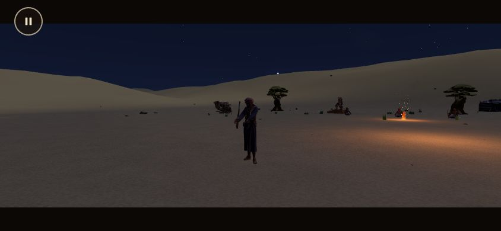
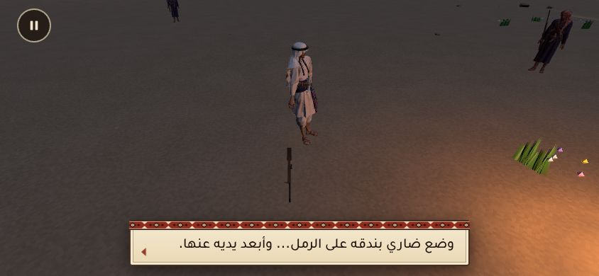
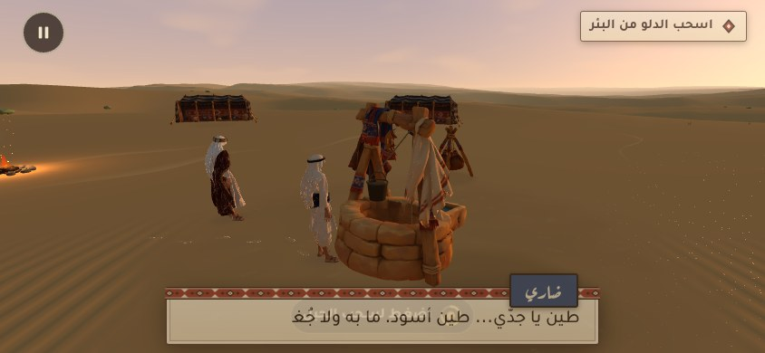
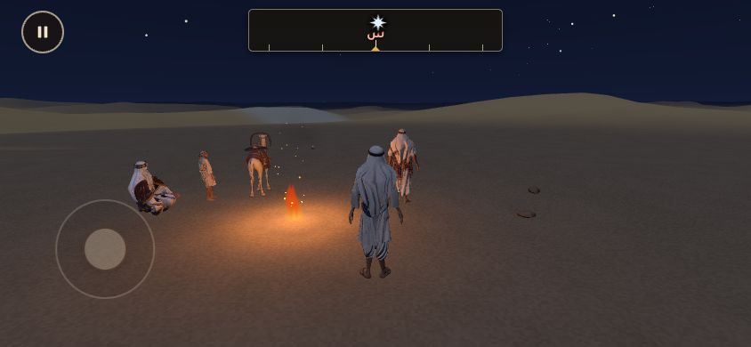

16 نوفمبر 2026 · النسخة الجديدة مستقلة عن مستودع الأصل ورابطه.
المقارنة أدناه مع الأرشيف الذي اعتمده المستخدم. الصور مأخوذة من تشغيل اللعبة في المتصفح وليست صورًا مولّدة؛ لا ندّعي مطابقة الأرشيف حرفيًا للنشر الحي المحمي بتسجيل الدخول.
R05 ما زالت جزئية: تحسنت الخامات والإضاءة والحركة، لكن نماذج الوجوه والناقة والشجرة لا تزال مبسطة، والأصابع ليست مزودة بتحريك مستقل. لا تمثل هذه النسخة تحولًا مكتملًا إلى واقعية فوتوغرافية.
ما اختُبر فعليًا
23 اختبار وحدة ناجحًا، واختبارات الإدخال F11–F14 ناجحة دون أخطاء صفحة: لمس/فأرة، إيقاف واستئناف أثناء الحوار والسينما، إعدادات وتمرير، ووضعا الشاشة.
مسار آلي متصل عبر الفصول الخمسة وصل إلى النهاية c5_end في55,598 خطوة محاكاة و15.5 دقيقة محاكاة. الأداة تستخدم إدخالًا آليًا وانتقالًا إلى الأهداف؛ ليست جولة بشرية متصلة ولا15.5 دقيقة زمن حقيقي.
التقاط النجوم الثلاثة:megrez, polaris, canopus. القتال:14 اندفاعًا، منها تمويهات الألفا، و12 صدًا و0 عضات مسجلة؛ ثم اكتمال بقية القصة.
الصور:10 مشاهد موزعة على الفصول الخمسة، مع سحب عصا اللمس وتوجيه الكاميرا وضغط الدلو وتقدم الحوار. أُعيدت المشاهد الحرجة بعد التصحيح.
تماس الدلو:275 إطار ضغط فعّال؛ انحراف نقطتي المعصم عن موضع الحبل لم يتجاوز حد القبول 1 سم في أي إطار. فُحص ترك الزر وانخفاض الدلو ثم استئناف الرفع، وثبات التعليق عند البئر قبل الإمساك وبعد الإفلات. هذا قياس للهيكل، وليس إثباتًا لتحريك الأصابع.
ثبات هندسة البئر عند الانتقال بين مسافات التفاصيل: ناجح. تبديل الجودة على الراكب والبئر medium→low→high:ناجح. لمس بإصبعين للحركة والنظر، ثم رفع إصبع وبقاء الآخر، ثم الإلغاء:ناجح؛ طريقة الإرسال:CDP touchEnd releases right/look contact; left remains down.
فقد سياق WebGL واستعادته:نجح داخل Chromium.
غير منفّذ: آيفون أو أندرويد متوسط أو آيباد فعلي، Safari/WebKit فعلي، قياس الحرارة والبطارية، أو اعتماد سمعي بشري للصوت. تغيير User-Agent لا يحوّل Chromium إلى Safari.
الأداء: قياس مختبري محدود
عينات فعلية من requestAnimationFrame على Linux/Chromium153 باستخدام الرسم البرمجي SwiftShader، ومتصفح واحد أثناء القياس. القيم أدناه هي وسيط/المئين 95 لزمن الإطار بالمللي ثانية؛ ليست FPS لهاتف حقيقي. الجودة تتكيف وتغير دقة الرسم، لذلك لا تُقرأ الأرقام كتحسن نسبي موثوق بين الأجهزة أو النسختين.
المحاكاة
قبل: p50 / p95 ms
V2: p50 / p95 ms
دقة الرسم قبل→بعد
عدد العينات قبل/بعد
هاتف أفقي 844×390
150.0 / 300.0
166.7 / 450.0
590×273 → 506×234
63 / 53
هاتف عمودي 390×844
116.6 / 266.8
133.4 / 400.1
506×234 → 506×234
89 / 64
تابلت 1024×768
366.7 / 1183.2
283.3 / 783.4
1024×768 → 614×460
23 / 32
لم تثبت هذه العينات تحسن السلاسة: بعض عينات V2 أبطأ من الأساس، واعتماد أداء الجوال ما زال يتطلب أجهزة فعلية. ملف التابلت يستخدم Macintosh مع 5 نقاط لمس لمحاكاة كشف iPadOS؛ أُوقف MSAA فيه لتجنب كلفة غير مقصودة. نجاح هذا المسار لا يثبت أداءآيباد.
R01 — الجلوس وملامسة الرمل أُصلح وفُحص
أزيل خفض الجسد داخل الأرض، وأُعيد ضبط الجلسة والملابس وتماس الأجسام أثناء الانتقال. الصور والاختبار العددي يفحصان الجسد الفعلي.
حدود النتيجة: فُحص البئر في المحاكاة، وليس على آيفون فعلي.
R03 — اليد والحبل وسحب الدلو أُصلح ميكانيكيًا
الجهد والدلو يتحركان أثناء الضغط؛ ترك الزر يخفض الدلو، والضغط مجددًا يكمل الرفع. أزيل الدلو الساكن المكرر وضُبط تماس المعصمين مع الحبل. قبل الإمساك وبعد الإفلات يعود الحبل إلى التعليق عند البئر بدل متابعة موضع اليد.
حدود النتيجة: تعبيرات الوجه محدودة بنماذج المصدر؛ لا أنيميشن وجه جديد.
R05 — الخامات والاتجاه البصري جزئي
خامات PBR عند الجودة العالية؛ تستخدم الجودة المتوسطة والمنخفضة Lambert لتقليل كلفة الرسم. أضيفت تفاصيل سطحية وإضاءة أكثر اتساقًا مع البيئة، مع الحفاظ على الأصول والهوية التاريخية.
حدود النتيجة: لم تتحول النماذج المبسطة إلى أصول فوتوغرافية؛ الشجرة والناقة والوجوه ما زالت تحتاج إعادة نمذجة/خامات أعمق للوصول إلى الواقعية المطلوبة كاملة. لم يُستخدم توليد مدفوع.
R06 — الرمل وآثار المعسكر حُسّن وفُحص
أرض مستخدمة حول البئر والجلسة، آثار قديمة وتفاوت موضعي، وإزالة التموج المنتظم داخل منطقة السقاية بدل تغطية الصحراء بالأغراض.
حدود النتيجة: مقروئية العربية واللمس فُحصتا بالمحاكاة والاتجاهين.
مشاهد إضافية بعد الإصلاح
لقطة تعريف بأحد الرماة قبل إعادة التحكم

وضع البندقية مع ظهور الفعل فوق لوحة الحوار

نتيجة سحب الدلو تبقى مرئية

بداية كشف الذئاب قبل اكتمال ظهور القطيع

فحص نسخة الإنتاج
نجح بناء الإصدار 0.0.0-mwise7t9 وتشغيل بدايته محليًا في Chromium/SwiftShader دون أخطاء مسجلة في اختبار التشغيل. حجم حزمة JavaScript 1,147,087 بايت؛ لا تحتوي الحزمة على متغيرات الاختبار __hs / __G أو خريطة مصدر مضمنة. هذا فحص محلي آلي للإنتاج، وليس اختبار هاتف فعلي أو تأكيدًا للنشر الحي.
حُفظت نسخة الأساس المستقلة قبل الإصلاح عند f7afe6147b43ae6ad6bca7f1676b53d292e81e1b. فحص السلامة أعاد مقارنة 221 ملفًا متتبعًا في مساحة الأصل وأثبت عدم تغيرها خلال هذه المهمة؛ لا نشر أو push على الأصل ولا توليد مدفوع.